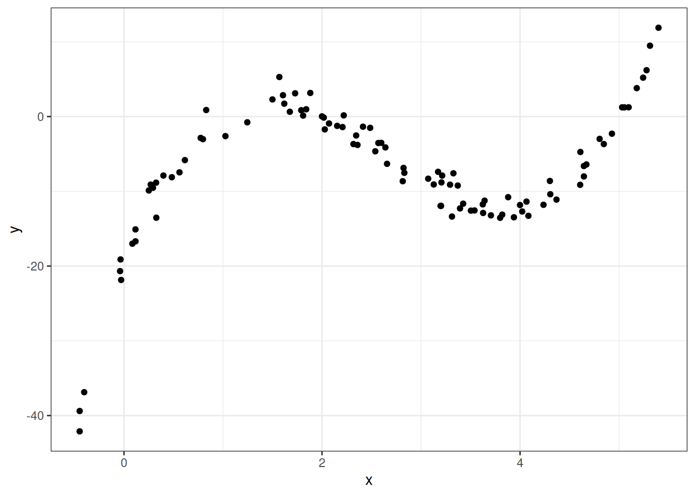
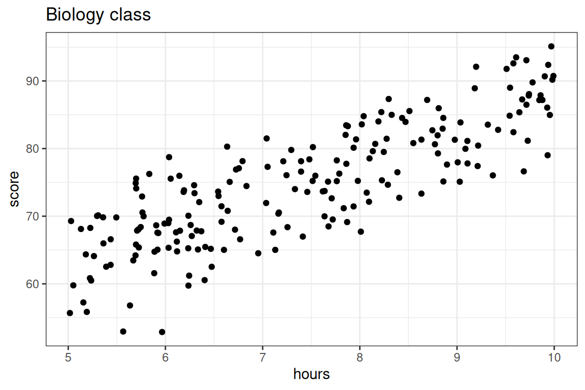

Improving Predictions and Overfitting
\(R^2\), Adding complexity, Overfitting.
WarningThis page covers…
- TODO
The Ideas in Code
Inspect model output with the broom library
Consider the code we ran earlier to fit a linear model which can predict graduation rate using the poverty rate.
m1 <- lm(Graduates ~ Poverty, data = poverty)When you run this code, you’ll see a new object appear in your environment: m1. This new object, though, is not a vector or a data frame. It’s a much richer object called a list that stores all sorts of information about your linear model. You can click through the different part of m1 in your environment pane, or your can use functions from the broom package to extract the important components using code.
library(broom)
glance(m1)# A tibble: 1 × 12
r.squared adj.r.squared sigma statistic p.value df logLik AIC BIC
<dbl> <dbl> <dbl> <dbl> <dbl> <dbl> <dbl> <dbl> <dbl>
1 0.558 0.549 2.50 61.8 3.11e-10 1 -118. 242. 248.
# ℹ 3 more variables: deviance <dbl>, df.residual <int>, nobs <int>The glance() function returns a series of different metrics used to evaluate the quality of your model. First among those is r-squared. Because the output of glance() is just another data frame, we can extract just the r-squared column using select().
glance(m1) |>
select(r.squared)# A tibble: 1 × 1
r.squared
<dbl>
1 0.558Here’s the \(R^2\) we got earlier!
Fitting polynomials in R with poly()
In R, we can fit polynomials using the poly() function. Here is the code that was used to fit the polynomial earlier in the notes.
You do not need to worry about the meaning behind the raw = TRUE argument. The simulated data frame mentioned earlier is called df, and has two variables in it: feature and target.
df <- df |>
mutate(feature = x,
target = y)lm(formula = target ~ poly(x = feature,
degree = 3,
raw = TRUE), data = df)
Call:
lm(formula = target ~ poly(x = feature, degree = 3, raw = TRUE),
data = df)
Coefficients:
(Intercept)
-20.086
poly(x = feature, degree = 3, raw = TRUE)1
34.669
poly(x = feature, degree = 3, raw = TRUE)2
-16.352
poly(x = feature, degree = 3, raw = TRUE)3
2.042 N.B. A polynomial of degree 2 is a more general concept than simply the square of a variable.
If you just want the square, then you can use the following syntax:
lm(formula = target ~ I(feature^2), data = df)
Call:
lm(formula = target ~ I(feature^2), data = df)
Coefficients:
(Intercept) I(feature^2)
-9.6064 0.2626 Don’t forget the function I(). If you don’t include that, the ^2 will be ignored!
Making predictions on a new observation with predict()
We have spending a lot of time talking about how to fit a model meant for predicting, but have not actually done any predicting! The predict() function can help us do this. It takes in two main arguments:
object: This is the linear model object which contains the coefficients \(b_0\), …, \(b_q\). In the graduate and poverty example, this object wasm1. We hadm1throughm4in the ZAGAT example.newdata: This is a data frame containing the new observation(s). This data frame must at least contain each of the features used in the column, with a value of these variables for each observation.
Example: ZAGAT food rating
# A tibble: 168 × 6
restaurant price food decor service geo
<chr> <dbl> <dbl> <dbl> <dbl> <chr>
1 Daniella Ristorante 43 22 18 20 west
2 Tello's Ristorante 32 20 19 19 west
3 Biricchino 34 21 13 18 west
4 Bottino 41 20 20 17 west
5 Da Umberto 54 24 19 21 west
6 Le Madri 52 22 22 21 west
7 Le Zie 34 22 16 21 west
8 Pasticcio 34 20 18 21 east
9 Belluno 39 22 19 22 east
10 Cinque Terre 44 21 17 19 east
# ℹ 158 more rowsm2 <- lm(price ~ food + geo, data = zagat)Here, we will use m2 from the ZAGAT example. This model used food and geo in an attempt to predict price at a restaurant.
First, let’s make a new data frame with a couple of new, made-up observations.
restaurants <- data.frame(
food = c(25, 17),
geo = c("east", "west"))One of these restaurants is located in east Manhattan and has a food score of 25/30, while the other one is in west Manhattan and has a food score of 17/30.
Now, we can use this data frame alongside our m2 model object to make predictions for the prices.
predict(object = m2, newdata = restaurants) 1 2
55.89738 31.44043 We are predicted to have to pay roughly \(\$56\) at the first restaurant and roughly \(\$31\) at the second.
Overfitting, training and testing
Let’s shift the subject to biology, and illustrate the training and testing approaching to evaluating predictions for the exam scores from a biology class with 200 students using as a feature the number of hours that they have studied. Let’s visualize these data first.

Here we are going to compare two models: a simple linear model versus a 5th degree polynomial, both fit using the method of least squares.
- \(\textbf{Model 1:} \quad \widehat{score} = b_0 + b_1 \times hours\)
- \(\textbf{Model 2:} \quad \widehat{score} = b_0 + b_1 \times hours + b_2 \times hours^2 + b_3 \times hours^3 + b_4 \times hours^4 + b_5 \times hours^5\)
Step 1: Split data
We’ll use an 80-20 split of the sample, with each observation assigned to its set randomly. There are many ways to do this via code: here is one!
First, let’s shuffle the rows of our data frame at random. One way we can think about this is putting all of our rows in a hat and picking them out, one by one. In other words, we sample without replacement from our data frame, and our sample size is the number of rows in our data frame! We can bring this idea to life using a function in
dplyrcalledslice_sample(). Thenrow()argument allows us to get the exact number of rows no matter our data frame, so we won’t have to look to find that number each time.One other thing we’ll want to make sure to do is set our seed, so that our collaborators, or anyone else who wants to analyze our work, get the same split that we do.
set.seed(20)
shuffled_biology <- slice_sample(biology,
replace = FALSE,
n = nrow(biology))- Now that we have things mixed up, we can take the first 80 percent of our rows as training rows and the next 20 percent as testing rows. To do this, we’ll first make a vector containing position 1 all the way up to the row where we’ve reached 80 percent of the rows in the
biologydata frame. We can use our old friend,seq(), to help!
train_rows <- seq(from = 1,
to = nrow(shuffled_biology)* 0.8,
by = 1) Now, we can use a function in
dplyrcalledslice()to get our training and testing frame from ourshuffled_biologydata frame.slice()extracts rows from a data frame based on their position, and we can extract multiple rows using a vector which contains each of their positions. That’s exactly the kind of vector thattrain_rowsis!A very useful piece of syntax: if we write
-train_rows,slice()will know to focus all of the position numbers that weren’t in thetrain_rowsvector.
biology_train <- slice(shuffled_biology, train_rows)
biology_test <- slice(shuffled_biology, -train_rows)Step 2: Fit the model to the training set
Now, we’ll fit two models on the training data. We will be using lm(), and for both models, the data argument is given by biology_train.
lm_slr <- lm(score ~ hours, data = biology_train)
lm_poly <- lm(score ~ poly(hours, degree = 20, raw = T),
data = biology_train)We can evaluate the \(R^2\)’s for both models’ performance on the training data just like before with glance(). Which model do you expect to have a better training set \(R^2\) value?
library(broom)
glance(lm_slr) |>
select(r.squared)# A tibble: 1 × 1
r.squared
<dbl>
1 0.693glance(lm_poly) |>
select(r.squared)# A tibble: 1 × 1
r.squared
<dbl>
1 0.715Just as we might have guessed from looking at the model fits, the polynomial model has a better \(R^2\) value when evaluated on the training set.
Step 3: Evaluate the model on the testing set.
The real test of predictive power between the two models comes now, when we will make exam score predictions using the testing set: data which the model was not used to fit and hasn’t seen.
We will still be using the predict() function for this purpose. Now, we can just plug biology_test into the newdata argument!
score_pred_linear <- predict(lm_slr, newdata = biology_test)
score_pred_poly <- predict(lm_poly, newdata = biology_test)Once these predictions \(\hat{Y}_i\) are made, we then can use dplyr code to:
- mutate on the predictions to our testing data
- set up the \(R^2\) formula and calculate1. In the code below, we are using the formula
\[R^2_\mbox{model} = 1-\frac{\mbox{MSE}_\mbox{model}}{\mbox{MSE}_\mbox{baseline}} = 1-\frac{\sum_{i=1}^n(Y_i-\hat{Y_i})^2}{\sum_{i=1}^n(Y_i-\bar{Y})^2}\]
- We can also calculate \(\mbox{RMSE}_\mbox{model}\), of course.
biology_test |>
mutate(score_pred_linear = score_pred_linear,
score_pred_poly = score_pred_poly,
resid_linear = score - score_pred_linear, # compute the residuals for linear model
resid_poly = score - score_pred_poly) |> # compute the residuals for poly model
summarize(MSE_baseline = mean((score - mean(score))^2), # compute total variation or baseline MSE
MSE_linear = mean(resid_linear^2), # compute RSS for the linear model
MSE_poly = sum(resid_poly^2)) |> # compute RSS for the polynomial model
mutate(Rsq_linear = 1 - MSE_linear/MSE_baseline, # compute Rsq, MSE, RMSE for each model
Rsq_poly = 1 - MSE_poly/MSE_baseline,
RMSE_linear = sqrt(MSE_linear),
RMSE_poly = sqrt(MSE_poly)) |>
select(Rsq_linear, Rsq_poly, MSE_linear, MSE_poly, RMSE_linear, RMSE_poly)# A tibble: 1 × 6
Rsq_linear Rsq_poly MSE_linear MSE_poly RMSE_linear RMSE_poly
<dbl> <dbl> <dbl> <dbl> <dbl> <dbl>
1 0.664 -17.5 26.6 1467. 5.16 38.3Voila! The linear model’s test set \(R^2\) is better than the polynomial model’s test \(R^2\)! We also see the \(\mbox{MSE}\) for the linear model is lower than that for the polynomial model.
So which is the better predictive model: Model 1 or Model 2? In terms of training, Model 2 came out of top, but Model 1 won out in testing.
Again, while training \(R^2\) can tell us how well a predictive model explains the structure in the data set upon which it was trained, it is deceptive to use as a metric of true predictive accuracy. The task of prediction is fundamentally one applied to unseen data, so testing \(R^2\) is the appropriate metric. Model 1, the simpler model, is the better predictive model. After all, the data we are using looks much better modeled by a line than a five degree polynomial.
Footnotes
Because \(\hat{Y}_i\) involve information from the training data and \(Y_i\) and \(\bar{Y}\) come from the testing data, the decomposition of the sum of squares does not work. So, we cannot interpret testing \(R^2\) as we would training \(R^2\), and you may have a testing \(R^2\) less than 0. However, higher \(R^2\) values still signal that the model has good predictive power.↩︎